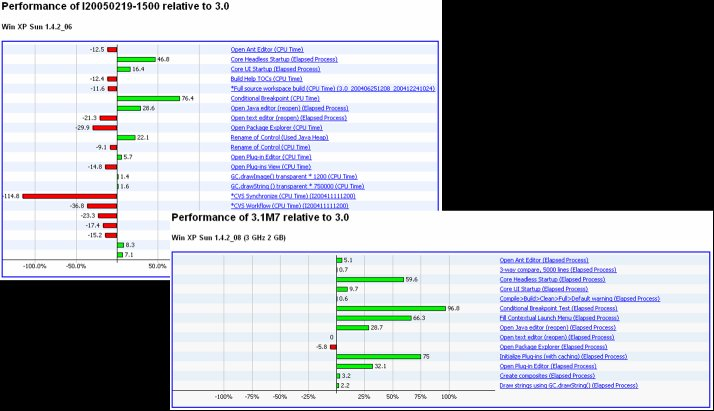
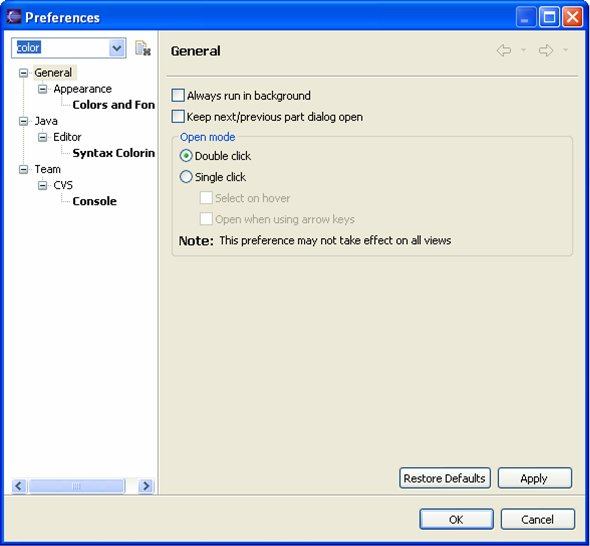
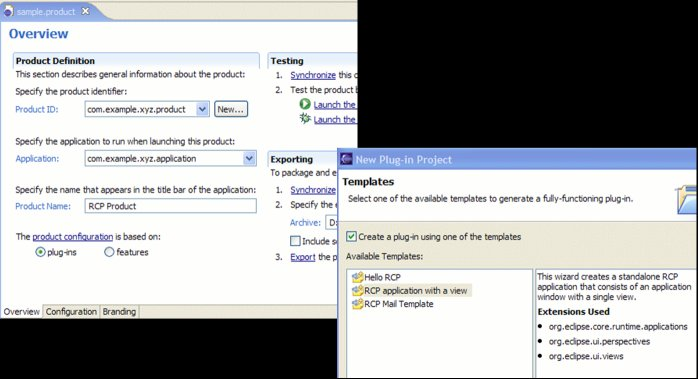
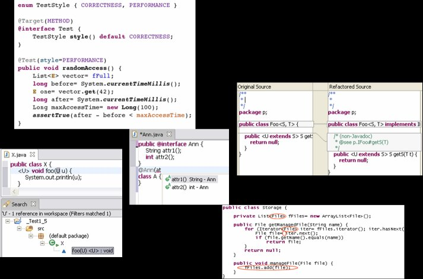
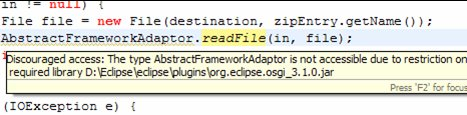
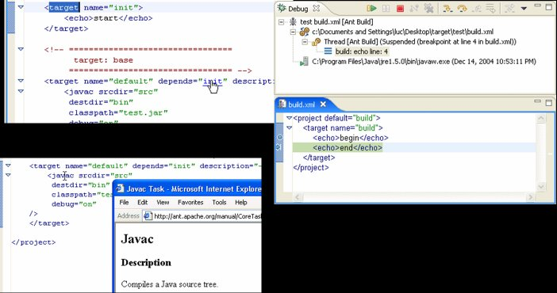

|
Performance & scalability
- Large-scale workspaces
- Performance improvements
- Added critical performance instrumentation
- Scalability
- RCP performance improvements
- Single JAR plug-ins
- Support for per-plug-in search index
- Breakpoint improvements
|
 |
|
Ease of Use
- Overhaul of preferences dialog
- Ant editor improvements
- Initial user experience improvements
- New Help view and Dynamic help
- Help search enhancements
- JDT usability improvements
- Debugger usability improvements
- Preferences dialog filtering
- Pervasive context help pane

The preferences dialog has been significantly updated to provide more flexibility
and control for the user's overall experience. |
|
Rich Client Platform (RCP) tool support
- RCP performance
- RCP infrastructure
- RCP API
- OSGi
- Dynamic plug-ins
- JNLP Support
- Support for launcher branding
- Provide better text editor support for RCP
- RCP application templates
- Improved tooling
- See http://www.eclipse.org/community/rcp.html for examples of real
applications

|
|
J2SE 5 support
- Eclipse compiler passes JCK test suite
- Eclipse compiles JDK 1.3, 1.4, 5.0
- Provides "deep" tooling support for new J2SE 5.0 features
- Existing features fully J2SE 5 aware
- Quick fix/quick assist
- Refactoring
- Search
- Formatter
- Debugging
- J2SE 5.0 specific support
- Auto boxing highlighting
- Infer type arguments refactoring
- Compiler diagnosis for 'enum' identifier
- Quick assist to convert to enhanced for loop
- Operating on generic type parameters
- New Quick Assists for conditional statements and convert to
enhanced for-loop
- Evaluation support for generics and enhanced for-loops
- Varargs argument needing a cast
- Annotations
- Many J2SE 5.0 specific compiler diagnostics
- API
- Fully support J2SE 5.0 features
 |
|
Enterprise-ready
- Working in large workspaces
- Reified working sets in the package explorer
- Grouping of breakpoints
- Settings
- Shared settings per project
- Import/export of settings
- CVS Improvements
- Plug-in JAR signing
- Architectural access restrictions
- Update Manager Improvements
- JUnit - large scale test suites
|
|
Design for Extensibility - Being a Better
Platform
- Refactoring of action contributions
- New APIs
- generalized undo/redo
- content types
- ltk (language toolkit) enhancements
- Push down JDT specific functionality
- Architectural Access Restrictions
 |
|
Appealing to the Broader Community
- Ant
- Editor improvements
- Ant Debugger
- Import/export of Ant build files
- Improved compiler checking
- Improve support for externalized strings
- Improve program manipulation infrastructure
- JFace and Workbench support BIDI
- File names containing colon and backslash characters
- Import/Export to tar.gz format

|
|